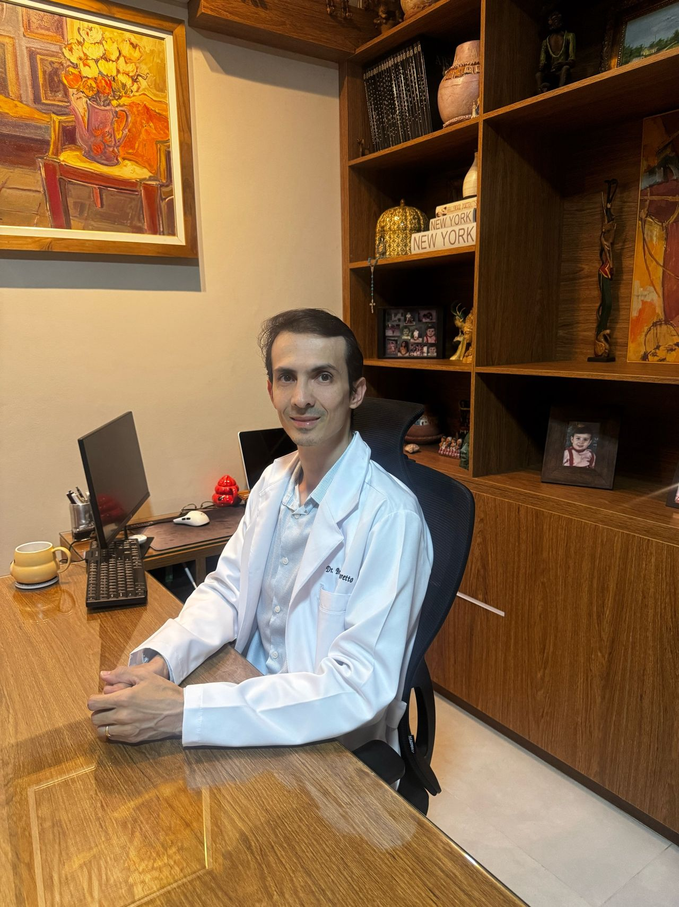
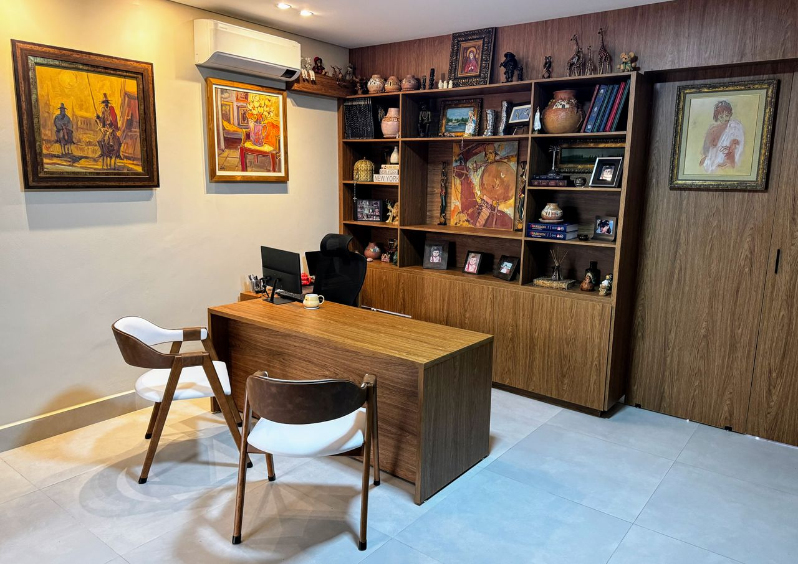
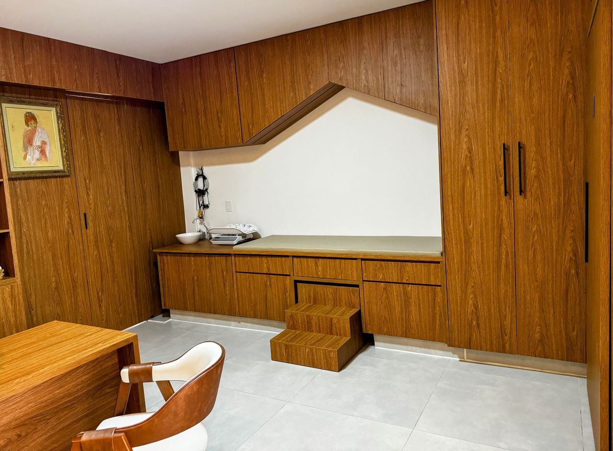
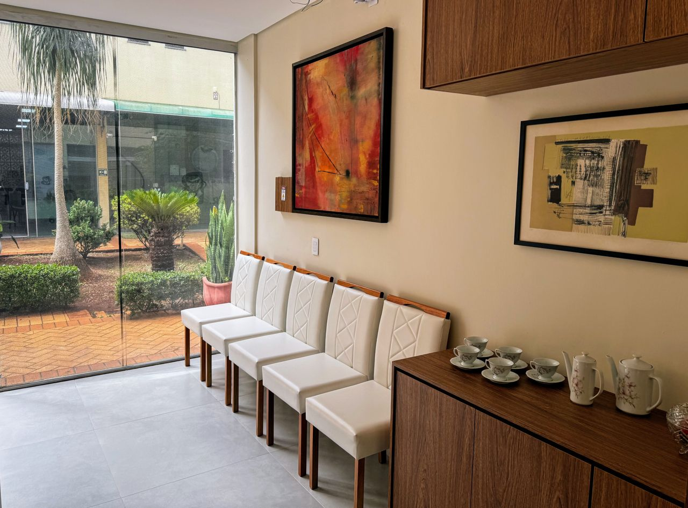
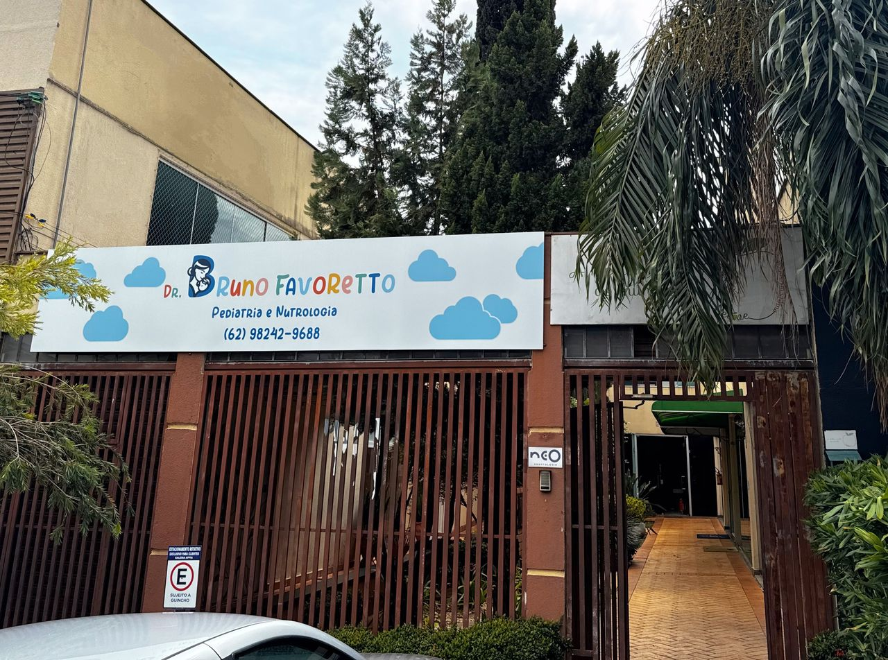

Atendimento médico humanizado para crianças e adolescentes em Goiânia.
Agendar Consulta
Dr. Bruno Favoretto é médico em Goiânia (CRM-GO 20000), dedicado ao acompanhamento clínico de crianças e adolescentes. Com formação sólida e pós-graduação em Pediatria e Nutrologia, sua prática é pautada na escuta cuidadosa e no suporte integral às famílias.
No consultório, busca oferecer orientações claras sobre crescimento, alimentação e desenvolvimento, sempre com foco no bem-estar e na saúde a longo prazo de seus pacientes.
CRM-GO 20000
Pós-graduação em Pediatria e Nutrologia — NÃO ESPECIALISTA
Acompanhamento detalhado de todas as fases do crescimento e desenvolvimento neuropsicomotor da criança.
Orientação alimentar personalizada para garantir todos os nutrientes necessários para um crescimento saudável.
Atendimento on-line prático e seguro para orientações e acompanhamentos que não exigem exame físico presencial.
Conforto e segurança para sua família com atendimento médico no ambiente do seu lar.




Estamos prontos para atender você e sua família com todo o cuidado que vocês merecem.
Rua C-149, nº 1119, Nova Suíça, Goiânia — GO
(62) 98242-9688
bruno.favoretto@hotmail.com